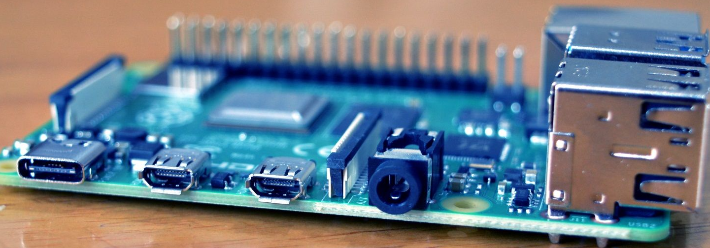

NAS on a raspberry pi 4
Building my own NAS on a raspberry on my home network, Dec 4, 2021
NAS with ssh
There are many ways to set up a network storage. One way to to set it up is with samba although it allows for more complex protocols it will take some hours to learn. A easier approach is to set up the connection with ssh. Find the ip address with the ip a command on the pi and then and the connection in other location on ubuntu with the command ssh://[IP ADDRESS]
New server added
Got given a HP Motherboard with RAM, tower coller and a CPU, Sep 2, 2017

Spin an old computer to life
Just picked up a HP 5188 motherboard, AMD Athlon 2X duel CPU and 2 Gigs of RAM. The system is quite old since it came out in 2006, but my plan is to bring it back to life with Lubuntu or some sort of arch linux.
About Me

I'm a 19 year old brunette, who thought I could make a blog to share my learnings with the world. :)
Popular Post
Follow Me / Contect
Instagram : simon_nyvall Github : SimonNyvall eMail : simon.k.nyvall@gmail.com